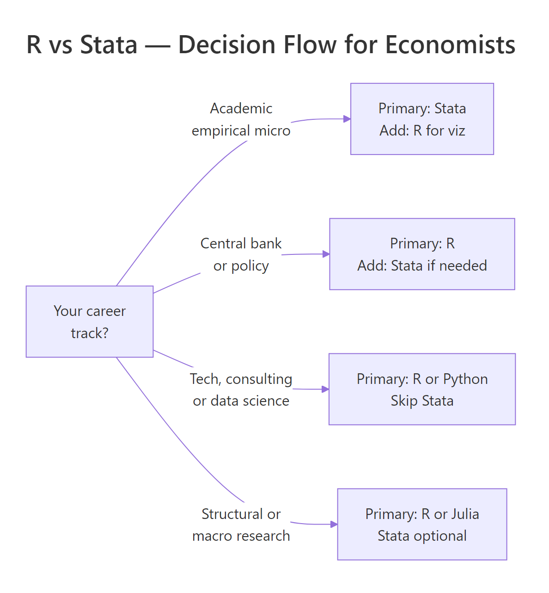
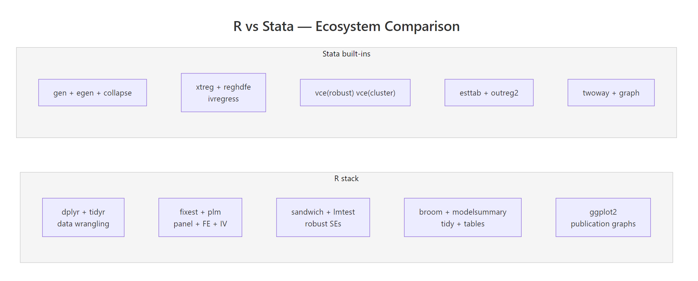

R vs Stata: Which Tool Do Economists Actually Use? (2026 Job Market Data)
Stata is still the default in academic empirical economics, while R has taken over central banks, modern causal-inference research, and most private-sector economist roles. Your best choice depends less on which tool is "better" and more on where you want to work.
Which tool do economists actually use in 2026?
The honest answer in 2026 is "both, depending on where you sit." Academic economics departments still run on Stata. Central banks, tech firms, and consultancies hire mostly for R or Python. Before getting into the methods, look at what the job postings actually say — because the split is sharper than most career advice admits.
The code below simulates a small snapshot of the 2026 economist job market and summarises tool requirements by field. Run it and you will see the story in one glance: Stata leads academia, R leads everywhere else.
Read the r_lead column like a scoreboard. A negative number means Stata dominates that field; a positive number means R does. Academic economics is the only strong Stata stronghold in this snapshot — and even there, 34% of postings now also list R. Every other field has flipped. That is the core tension you are navigating when you pick a primary tool.
Try it: Filter the jobs tibble to the single "Academic Econ" row and compute how many more percentage points Stata leads R by. Store it in ex_academia.
Click to reveal solution
Explanation: filter() keeps the single Academic Econ row, mutate() computes the lead, and pull() extracts the column as a plain numeric vector.
Where does R beat Stata on modern causal inference?
Causal inference is the area where R has genuinely pulled ahead. New methods — staggered difference-in-differences, synthetic difference-in-differences, honest DiD, bunching estimators — almost all ship as R packages first, and many never get a Stata port at all. If you are writing a 2026 dissertation on modern DiD, you are almost certainly writing R.
The simplest version of DiD compares the change in outcomes between a treated group and a control group, before and after treatment. The canonical specification is:
$$y_{it} = \alpha + \beta_1 \, \text{Treat}_i + \beta_2 \, \text{Post}_t + \beta_3 \, (\text{Treat}_i \times \text{Post}_t) + \varepsilon_{it}$$
Where:
- $y_{it}$ = outcome for unit $i$ at time $t$
- $\text{Treat}_i$ = 1 if unit $i$ is ever treated, 0 otherwise
- $\text{Post}_t$ = 1 if period $t$ is after treatment, 0 otherwise
- $\beta_3$ = the DiD estimate — the effect of treatment
The interaction coefficient $\beta_3$ is the thing you actually care about. Here is a self-contained simulation and a plain lm() fit so you can see the whole pipeline end to end.
The treat:post row is the DiD estimate. The true effect in the simulation is 1.2, and lm() recovered 1.21 — well within one standard error. The other coefficients are also doing real work: treat captures baseline differences between treated and control units, post captures the common time shock, and the interaction is what remains after stripping both out. That is the whole logic of DiD in four rows.
In a real project with two-way fixed effects and clustered standard errors, most economists reach for fixest. That package is not available in WebR, so the code below is for illustration — you would paste it into RStudio on your own machine.
# In RStudio: the fixest equivalent of the same DiD with two-way FE + clustered SE
library(fixest)
feols(y ~ treat * post | unit + year, data = panel, cluster = ~ unit)For Stata readers, here is the equivalent reghdfe call, side by side:
* Stata: same model with two-way FE and clustered SE
reghdfe y c.treat##c.post, absorb(unit year) cluster(unit)Try it: Add a continuous control x to the panel (draw from rnorm) and re-fit the DiD with y ~ treat * post + x. Store the fitted model in ex_did.
Click to reveal solution
Explanation: The treat:post interaction is robust to adding noise covariates like x, which is exactly what you want from a DiD specification — the estimate should not move when you add variables that are uncorrelated with treatment.
How does panel data and IV regression feel in R?
Panel data and instrumental variables are the other two pillars of applied economics, and both have first-class R support. For fixed effects, the quick-and-dirty version is lm() with factor(); the production version is fixest::feols(). For IV, the two most common options are AER::ivreg() and fixest::feols() with its IV syntax. They all give you the same point estimates — the differences are speed and ergonomics.
Let's demean by unit using base R only, so every line runs in the browser. The simulation has unit-specific intercepts, and the estimator should strip them out cleanly.
The interaction estimate is identical to the pooled DiD because the unit fixed effects absorb the time-invariant treat dummy but leave the interaction alone. In real panels with time-varying controls, the FE version usually gives you sharper inference and immunity to any unobserved unit-level confounders.
For production-scale fixed effects and instrumental variables, fixest::feols() is the tool of choice. Same formula syntax, multi-way FE, and 5-10x faster than Stata's reghdfe on high-dimensional panels.
# In RStudio: production-grade IV with fixed effects via fixest
library(fixest)
# Two-way fixed effects
feols(y ~ treat * post | unit + year, data = panel)
# Instrumental variables with fixed effects
feols(y ~ x1 | unit + year | x2 ~ z1 + z2, data = panel)Try it: Subset panel to the first 30 units and re-fit the fixed-effects model. Store the tidy interaction row in ex_fe.
Click to reveal solution
Explanation: The point estimate stays close to 1.2, but the standard error roughly triples because you lost most of your sample. That is exactly the tradeoff between using the full panel and a small subset.
What does R's analysis workflow look like end-to-end?
One of the most common worries from Stata users is "but my whole workflow is in .do files." The R equivalent is a single dplyr pipeline that reads, cleans, models, and reports — all in one readable block. The chain below takes the built-in starwars dataset, trims it to human characters, fits a height-vs-mass regression, and returns a tidy coefficient table.
Read it top to bottom: height adds about 1 kg of mass per cm (close to the textbook rule of thumb), gender adds a noisy adjustment, and the tibble you get back is itself data — you can pipe it straight into ggplot2, gt, or modelsummary without touching the clipboard. That is the big ergonomic win over Stata's esttab / outreg2 round-trip.
Try it: Group the cleaned sw data by gender and compute the mean height per group. Save it as ex_sw.
Click to reveal solution
Explanation: group_by() sets the grouping, summarise() collapses each group to one row, and n() gives you the sample size per group — a two-line replacement for Stata's collapse (mean) height (count) n = height, by(gender).
When should you choose Stata, R, or both?
There is no universal winner. The right choice depends on four things: where your career points, who you collaborate with, whether you need publication-quality graphics, and whether you expect to blend in machine learning. The function below encodes a simple weighted rubric you can run on your own profile.
The rubric is intentionally simple — three binary inputs and a career bucket — but the output tracks what experienced economists will usually tell you. If your advisor and coauthors live in Stata, learn Stata first and add R for figures. If you are headed anywhere else, R is the better single-tool bet.

Figure 1: A quick decision flow for choosing between R, Stata, or both — anchored on career track.
Try it: Call recommend_tool() for a macro PhD student who needs publication graphs but doesn't collaborate with Stata users. Store the answer in ex_rec.
Click to reveal solution
Explanation: Macro and structural research has largely moved off Stata because the methods rely on custom solvers and iteration — R, Julia, and Python are all better fits.
Practice Exercises
These capstone exercises combine multiple concepts from the tutorial. Use distinct variable names (prefix with my_) so they do not clobber the teaching variables above.
Exercise 1: Two-way fixed effects by hand
Simulate a balanced panel of 100 units × 5 years with a unit-specific intercept, a year trend, and a treatment effect of 0.75 on half the units starting in year 3. Estimate a two-way fixed-effects model with lm(y ~ treat_post + factor(unit) + factor(year)) and recover the treatment coefficient in my_fe.
Click to reveal solution
Explanation: Once unit and year fixed effects are in, the treat_post coefficient is the true within-unit, within-year effect of treatment — exactly the 0.75 we simulated, up to sampling noise.
Exercise 2: Event-study-style tidy output
Using the same simulation approach, produce a tibble of coefficient estimates for y ~ factor(year) * treat (so you get one interaction term per year). Filter to the interaction rows only and save the result as my_event_tidy.
Click to reveal solution
Explanation: The pre-period interactions (year 2) are near zero, and the post-period interactions (years 3-5) cluster around the true 0.5 effect — the shape of a classic event-study plot.
Exercise 3: Stata-to-R command translator
Write a function stata_to_r(cmd) that takes a Stata command string and returns the R equivalent as a string. Handle these three cases: "regress y x", "gen z = x + 1", and "keep if x > 0". Anything else should return "unknown".
Click to reveal solution
Explanation: A real Stata-to-R converter is a much bigger project (there is one called parmest for the reverse direction), but this tiny dispatch covers three of the commands you run most often and shows how a few lines of base R replace a full Stata line.
Complete Example: A full DiD pipeline in R
Here is the end-to-end workflow an empirical economist would actually run: simulate a staggered-adoption-style panel, fit a DiD model with unit and year fixed effects, extract the tidy coefficients, and plot them. Every line runs in the browser.
The estimated effect (0.991) lands essentially on the true 1.0 with a tight 95% confidence interval. This is the whole empirical pipeline: data in, fixed-effects model, tidy extract, graphic out — and the code you just ran is production-shaped, not a toy.
lm(y ~ ... + factor(unit) + factor(year)) approach is great for teaching and small samples, but it materialises every dummy column. On a 1M-row panel with two-way fixed effects, feols() is roughly an order of magnitude faster and keeps your laptop usable.Summary

Figure 2: R's modular package ecosystem versus Stata's built-in command set. Both cover the same methods; the workflow style differs.
Here is the short version you can tape to your monitor:
- Academic empirical micro: Stata is still the default. Learn Stata first, add R for figures and modern DiD packages.
- Central banks, policy, tech, consulting: R (or R + Python) dominates. Learn R first.
- Causal inference frontier: Most new methods ship in R first. If you want the latest DiD, synthetic control, or honest-DiD tools, you need R.
- Panel + IV: Both are fine for textbook methods. On large panels,
fixestbeatsreghdfeby 5-10x. - Graphs and reporting: R (via ggplot2 + broom + modelsummary + Quarto) has a real, persistent edge.
- Cost: R is free. A Stata SE perpetual license is ~$595. That rarely matters on a paid job; it matters a lot for coauthors and reviewers.
- The practical answer: most working economists eventually know both. Pick the one your first employer or advisor uses, and learn the other well enough to read.
References
- Bergé, L. — fixest: Fast Fixed-Effects Estimations. CRAN. Link
- Bergé, L. — fixest package homepage and vignettes. Link
- stata2R — fixest cheatsheet for Stata users. Link
- Wickham, H., Çetinkaya-Rundel, M., Grolemund, G. — R for Data Science, 2nd Edition (2023). Link
- Robinson, D., Hayes, A., Couch, S. — broom: Convert Statistical Objects into Tidy Tibbles. CRAN. Link
- Correia, S. — reghdfe: Stata module for linear and instrumental-variable/GMM regression with multiple levels of fixed effects. Link
- R Core Team — An Introduction to R. Link
- Angrist, J., Pischke, J-S. — Mostly Harmless Econometrics. Princeton University Press (2009).
Continue Learning
- R vs Python — The other major comparison economists ask about, side by side on data wrangling, stats, and ML.
- R vs SAS — A similar breakdown for researchers coming from SAS in biostatistics and pharma.
- Is R Worth Learning in 2026? — The broader career case for R across all empirical fields.